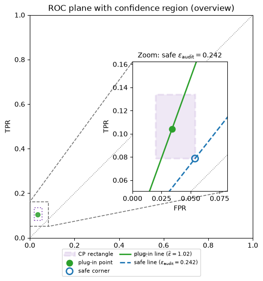

Loading interactive… (first load downloads a Python runtime)
Privacy Auditing
From ROC geometry to empirical lower bounds
Privacy Auditing
From ROC geometry to empirical lower bounds
Where we are
- Last lecture: DP as a hypothesis-testing / ROC constraint.
- This lecture: what happens when the ROC is only accessible through samples?
- Proofs give upper bounds; audits give lower bounds.
Recall: the adversary’s ROC
\[ H_0: M(D'),\qquad H_1: M(D) \]
\[ \mathrm{FPR}=Q(S),\qquad \mathrm{TPR}=P(S). \]
Recall: DP line
\((\varepsilon,\delta)\)-DP implies \[ \mathrm{TPR} \le e^{\varepsilon}\,\mathrm{FPR}+\delta. \]
We keep this one-sided direction throughout the lecture.
ROC points above the line falsify the claimed \(\varepsilon\) at this \(\delta\).
Flip side: exact inversion
\[ \varepsilon \ge \log\left(\frac{\mathrm{TPR}-\delta}{\mathrm{FPR}}\right). \]
If the ROC is known and \(\delta\) is fixed, we can read off the smallest \(\varepsilon\) line that contains it.
This is still exact privacy-profile geometry, not empirical auditing.
Laplace
Loading interactive… (first load downloads a Python runtime)
Gaussian
Loading interactive… (first load downloads a Python runtime)
Logistic
Loading interactive… (first load downloads a Python runtime)
The exact machinery is not hard-coded to Laplace or Gaussian. Add a new analytic distribution, compute its ROC, and the same line-fitting view applies.
When the mechanism is a sampler
\[ Z=Z_1+Z_2,\qquad Z_i \sim \mathrm{Logistic}(0,s_i). \]
\[ H_0: X=Z,\qquad H_1: X=1+Z. \]
Sampling is easy. Exact ROC calculation is no longer part of the lecture. From here on, we behave like auditors.
Empirical ROC
Loading interactive… (first load downloads a Python runtime)
Compute ε selects a threshold
With seed 4 and \(n=500\) per class, the lecture selects a fixed threshold and governing ROC point. We reuse that exact \(\tau_\star\) in every audit figure below.
tau_star = 3.400719\ngoverning point (FPR, TPR) = (0.034, 0.104)\nplug-in epsilon from empirical ROC = 1.0169Auditing one event
\[ S_{\tau_\star}=\{x>\tau_\star\}. \]
\[ \widehat{\mathrm{FPR}}=\frac{\mathrm{FP}}{\mathrm{FP}+\mathrm{TN}}, \qquad \widehat{\mathrm{TPR}}=\frac{\mathrm{TP}}{\mathrm{TP}+\mathrm{FN}}. \]
Fixed-threshold audit unfolding
Same finite sample as the empirical ROC; experiments arrive one at a time. Plays once and stops on the governing audit point.
Confusion matrix audit
FP=17, TN=483, TP=52, FN=448\nplug-in FPR=0.0340, TPR=0.1040, eps_plug=1.0169Fresh audit sample
Same threshold; redraw the finite sample (audit seed 42).
\[ \widehat{\varepsilon}_{\mathrm{plug}} = \log\left( \frac{\widehat{\mathrm{TPR}}-\delta} {\widehat{\mathrm{FPR}}} \right) \]
One run is not a certificate
Same mechanism, same threshold; different finite samples give different plug-in \(\varepsilon\) values.
run 1: eps_plug = 0.4605
run 2: eps_plug = 1.1221
run 3: eps_plug = 1.0141
run 4: eps_plug = 0.7259
run 5: eps_plug = 1.1653Why tail bounds appear
\[ \mathrm{TP}\sim \mathrm{Binomial}(n_1,\mathrm{TPR}), \qquad \mathrm{FP}\sim \mathrm{Binomial}(n_0,\mathrm{FPR}). \]
We need simultaneous confidence bounds on two binomial proportions, so the total failure probability is split across them.
Safe direction
\[ \mathrm{TPR}_{L}\le \mathrm{TPR}, \qquad \mathrm{FPR}\le \mathrm{FPR}_{U}. \]
Use \(\alpha/2\) for each one-sided interval when \(\alpha\) is the declared total failure probability.
Then
\[ \varepsilon_{\mathrm{audit}} = \log\left( \frac{\max\{\mathrm{TPR}_{L}-\delta,0\}} {\mathrm{FPR}_{U}} \right). \]
To avoid overstating privacy loss, move the empirical ROC point down and right.
Confidence rectangle


Naive versus safe
Loading interactive… (first load downloads a Python runtime)
What the audit proves
- It does not prove the mechanism is DP.
- It proves a one-sided lower bound for the fixed event: any valid \(\varepsilon\) at this \(\delta\) in this ROC direction must be at least the audited value, with high probability.
- It can reveal bugs or overly optimistic claims.
Extra complications
- Threshold selection and re-selecting the threshold on each empirical ROC sample.
- Multiple tests and multiple neighboring pairs.
- Dependence between samples.
- Computationally stronger distinguishers.
Keep these as caveats only.
Summary
- DP bounds the ROC curve.
- Known ROC + fixed \(\delta\) gives exact \(\varepsilon\).
- A sampler gives an empirical ROC.
- The seeded empirical ROC selects a threshold; replaying that same sample at the fixed test/event reproduces the governing point.
- A fresh audit sample at the same threshold gives a plug-in lower bound on \(\varepsilon\), but the plug-in value is random.
- Confidence bounds turn the estimate into a valid audited lower bound.